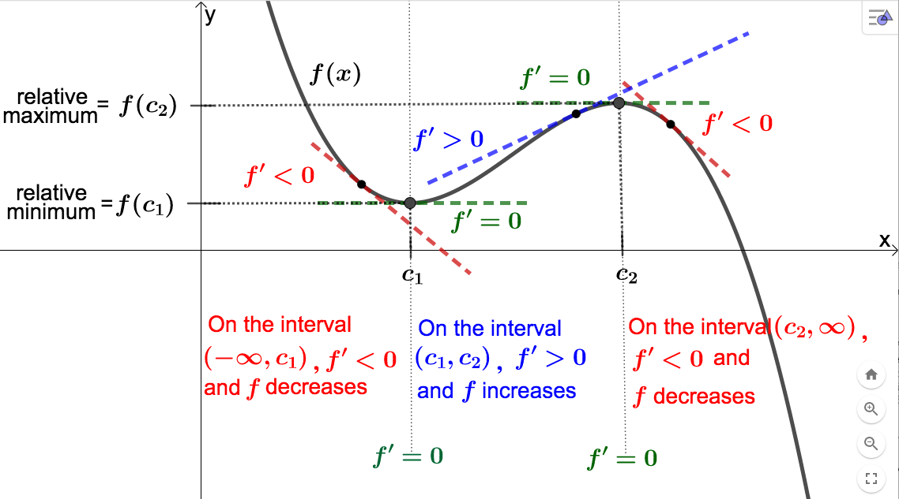
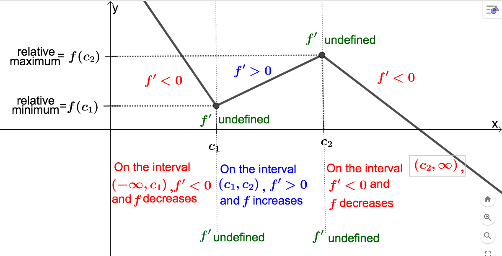
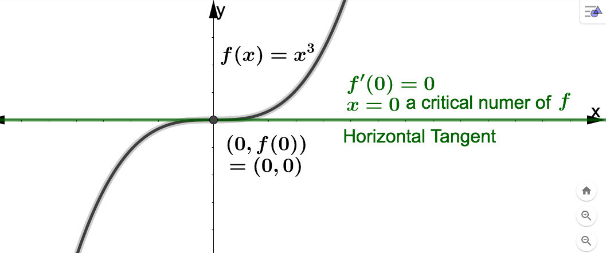

Section 3.6 Relative or Local Extrema
Notice that input values that make the derivative,
\(f'\) (or slope of the tangent line), 0 may correspond to points where
\(f\) may have a ``peak" or ``valley" on it's graph (see
Example 3.5.5). These points correspond to what we call relative (or local) extreme values of
\(f\text{.}\) This is at the heart of optimization applications and the topic of the this section.
As we have learned, \(f'\) gives us the instantaneous rate of change of \(f\text{.}\) Recall that when we interpret a value of the derivative, we mention that \(f\) is increasing if \(f'\) is positive or that \(f\) is decreasing if \(f'\) is negative. This applies to the graph of \(f\) as well.
In general, it is not easy to algebraically determine on what intervals a function is increasing or decreasing. Fortunately, we can use the sign of the derivative to make this job much simpler.
Fact 3.6.1.
Let \(I\) represent an open interval. Then If we combine these facts with what we observed in
Example 3.5.5, we have a method to find the ``peaks" and ``valleys" on the graph of a differentiable function (without having the graph available). The graph below indicates how we can use the sign of the derivative, along with the places where the derivative is equal to 0, to find these ``peaks" and ``valleys."

In general, if we know \(f'(c_1) = 0\text{,}\) and the sign of the derivative changes from negative to positive in some small neighborhood containing \(c_1\text{,}\) then \((c_1, f(c_1))\) will be a ``valley" on the graph of \(f\) (this is because these sign changes of the derivative tell us that \(f\) changes from decreasing to increasing, and so must ``bottom out" at \(c_1\)). In this case we call \(f(c_1)\) a relative (or local) minimum value of \(f\text{.}\) ``Relative" because, as you can see in the above picture, \(f(c_1)\) is NOT the smallest function value. It is the smallest, however, relative to the \(f(x)\)-values for \(x\) near \(c_1\text{.}\) Similarly if we know \(f'(c_2) = 0\text{,}\) and the sign of the derivative changes from positive to negative (which means \(f\) goes from increasing to decreasing, so must ``max out") in some small neighborhood containing \(c_2\text{,}\) then \((c_2, f(c_2))\) will be a ``peak" on the graph of \(f\text{.}\) In this case we call \(f(c_2)\) a relative (or local) maximum value of \(f\text{.}\) Below is a more formal definition of these concepts.
Definition 3.6.2.
Suppose \(f(x)\) is a function with the value \(c\) in its domain. Then \(f(x)\) has a relative (or local) maximum value of \(f(c)\) at \(x=c\) if \(f(c) \geq f(x)\) for every \(x\) near \(c\text{.}\) Similarly, \(f(x)\) has a relative (or local) minimum value of \(f(c)\) at \(x=c\) if \(f(c) \leq f(x)\) for every \(x\) near \(c\text{.}\)In the above definition, ``for every \(x\) near \(c\)" actually means ``for every \(x\) in some open interval containing \(c\text{.}\)"
We have a similar situation to the one in the above picture if the graph of \(f\) comes to a sharp point at \(c_1\) and \(c_2\text{.}\) The difference is that the derivative is not 0 at \(c_1\) and \(c_2\) in this case, but does not exist at these values instead. In other words, \(f\) is non-differentiable at \(c_1\) and \(c_2\text{.}\) The reason is because \(f\) does not have a unique tangent line (or unique direction) at these points. This scenario is not as important as the one above for our applications of the derivative, but you should be aware of difference. See the picture below for an illustration.

Notice that in the 2 graphs above, and
Example 3.5.5, the relative extreme values occurred in places where the derivative was 0 (that is, where there was a horizontal tangent line), or where the derivative was undefined (no unique tangent line). These values have a special name.
Definition 3.6.3.
The number \(x=c\) is a critical number of \((x)\) if The following fact greatly simplifies our work finding relative extreme values of a function.
Fact 3.6.4.
If \(f(c)\) is a relative extreme value of \(f\text{,}\) then \(x=c\) is a critical number of \(f\text{.}\)In light of the above fact, if we want to find relative extreme values of function, the only places we need look are at the critical numbers. This is good news, because most functions we work with will not have more than a few critical numbers.
The above fact, however, DOES NOT say that every critical number will produce a relative extreme value. Consider, for example, \(f(x) = x^3\text{.}\) Then \(f'(x) = 3x^2\) so that \(f'(0) = 0\) and we see that \(x=0\) is a critical number of \(f\text{.}\) Notice that if \(x \neq 0\text{,}\) \(f'(x) = 3x^2\) is greater than 0, which means that \(f\) is always increasing, so does not ``max out" at \((0,f(0))\text{,}\) but just has a flat spot (for a horizontal tangent) instead.
